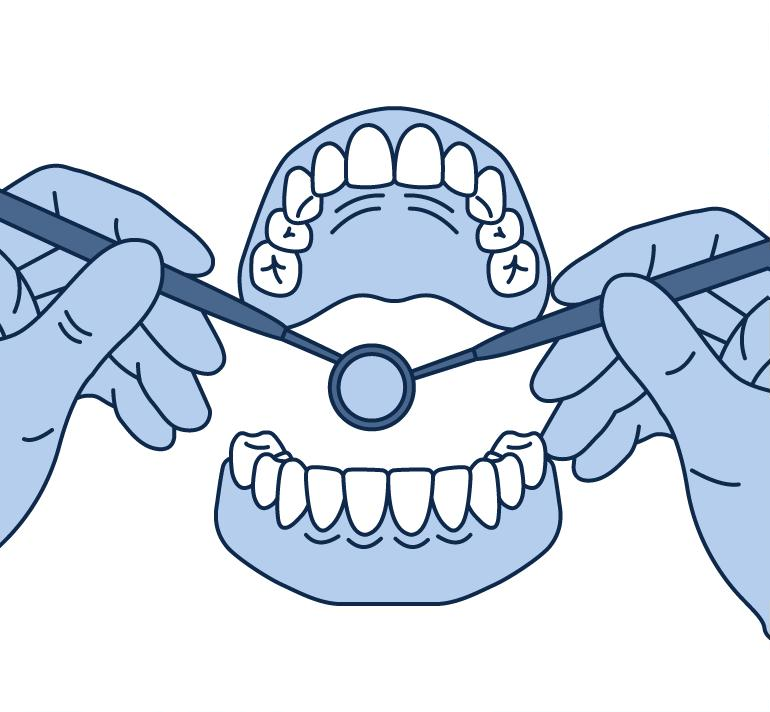
Только осмотр
Врач видит только внешнюю картину.
Диагноз строится на ограниченном количестве информации.
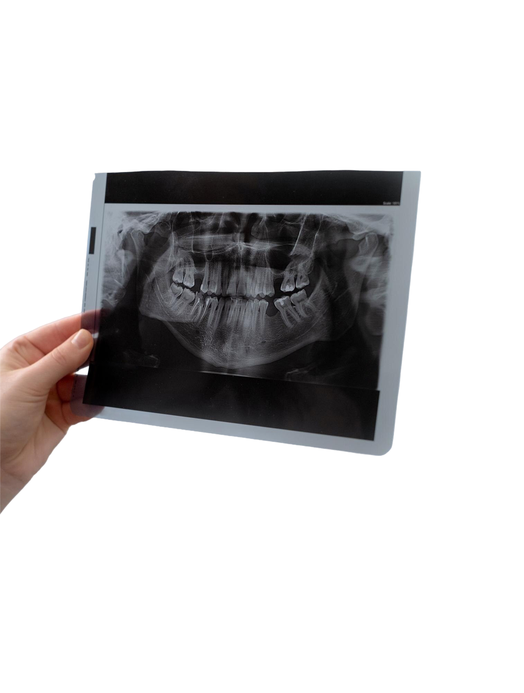
Перед составлением плана лечения и выбора тактики лечения врач должен увидеть то, что невозможно определить при обычном осмотре.
Смотреть видеоСовременная компьютерная томография (КТ) обладает очень низкой лучевой нагрузкой и является мировым стандартом стоматологической диагностики.
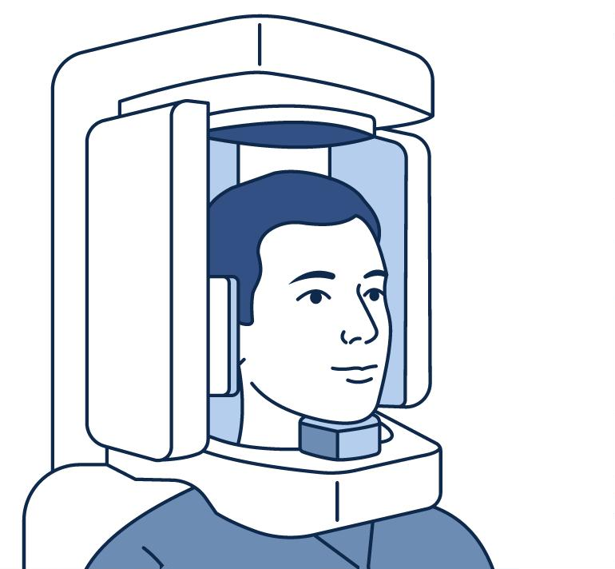
50 мкЗв
3 часа
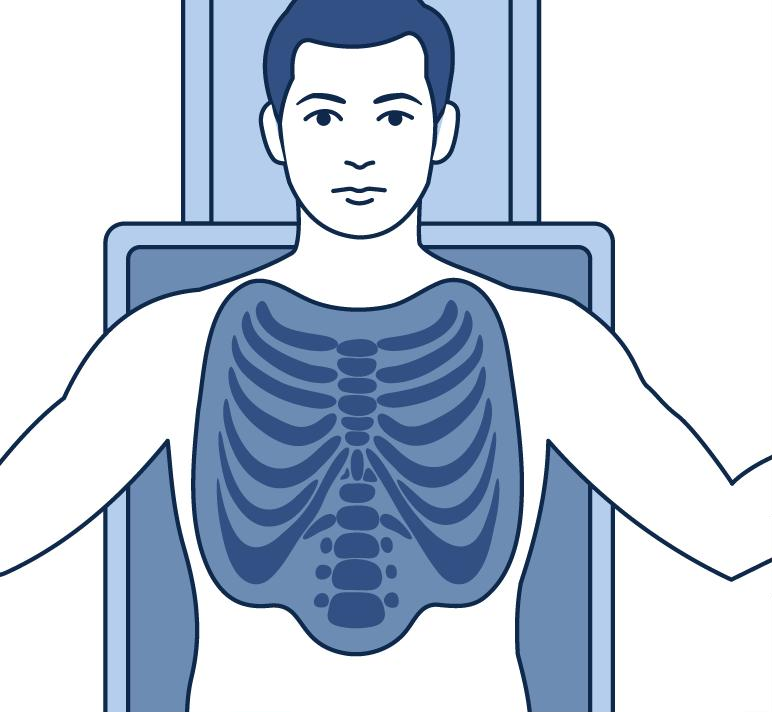
150 мкЗв

Врач видит только внешнюю картину.
Диагноз строится на ограниченном количестве информации.
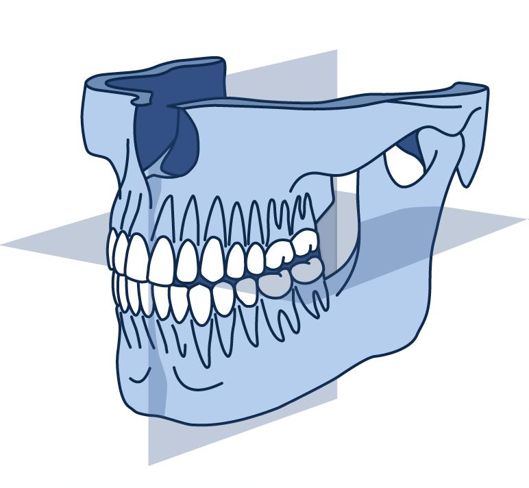
Врач получает полную трехмерную модель зубов и челюстей.
Он может оценить то, что невозможно увидеть при обычном осмотре или на двухмерном снимке.
Большая часть этой информации недоступна при обычном осмотре.
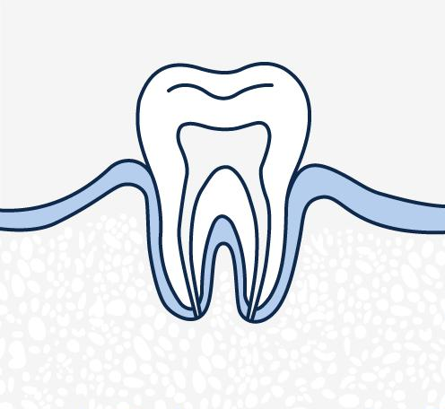
01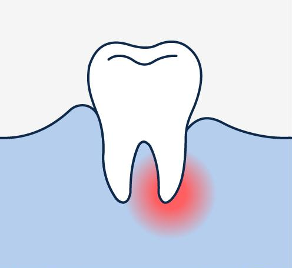
02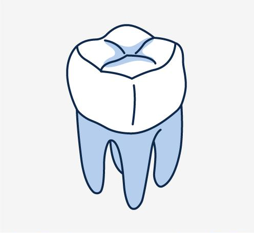
03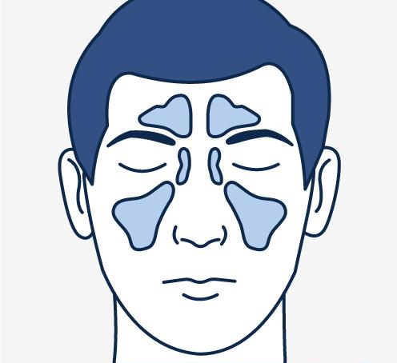
04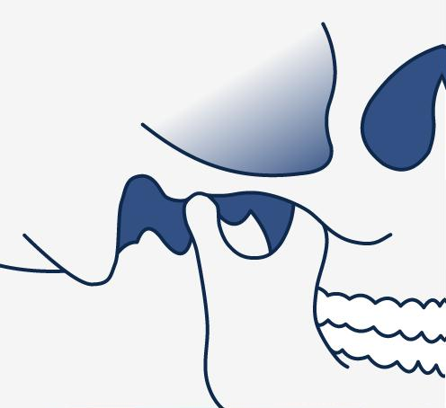
05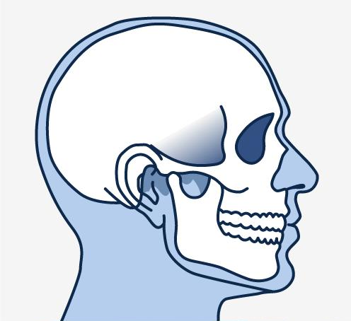
06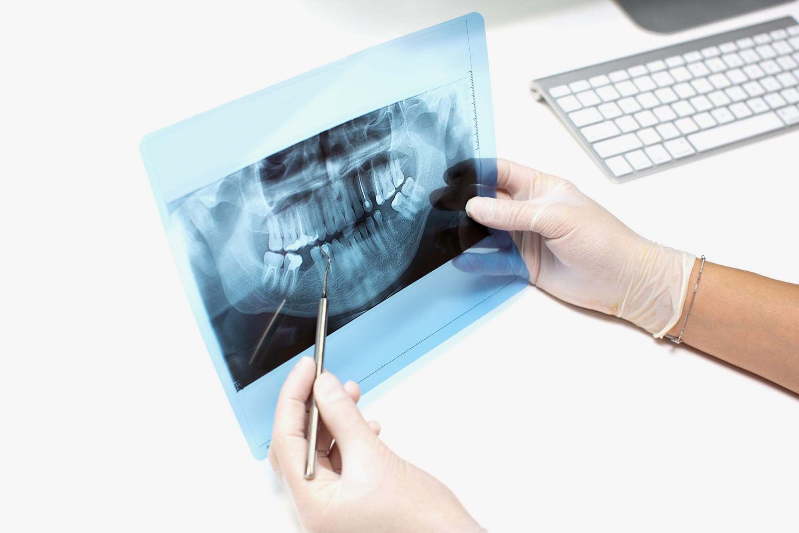
Направление на КТ связано с современными стандартами лечения, а не с внутренними правилами клиники.
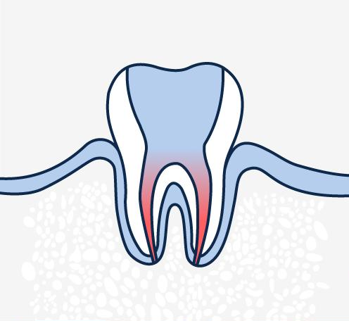
01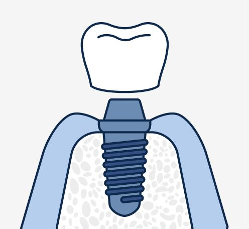
02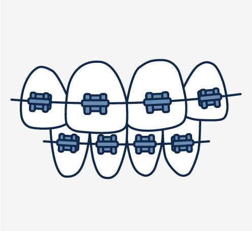
03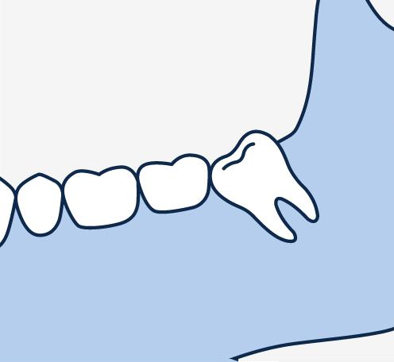
04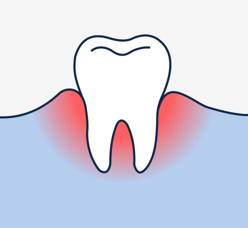
05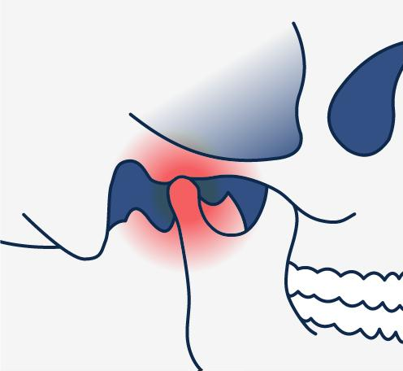
06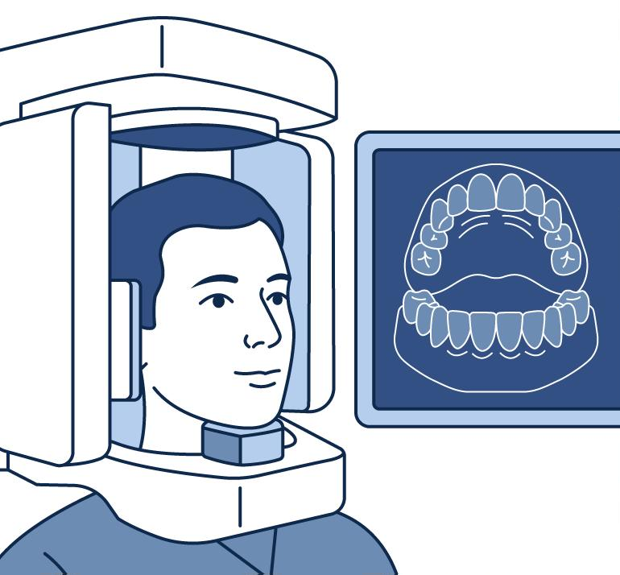
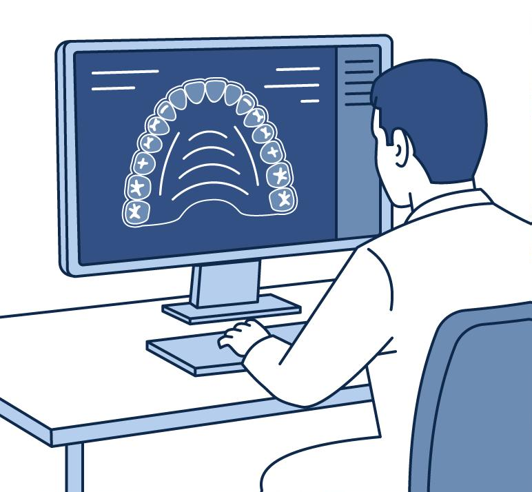
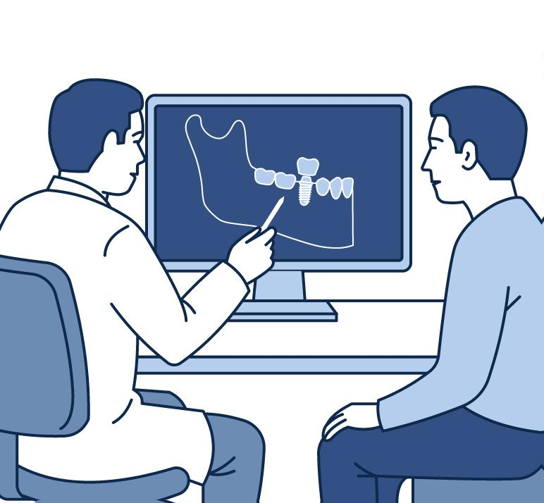
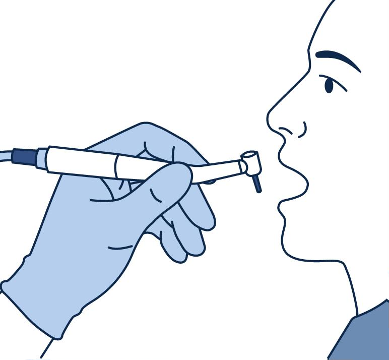
Компьютерная томография позволяет врачу увидеть полную картину, поставить максимально точный диагноз и подобрать наиболее эффективную тактику лечения.
Именно поэтому мы назначаем КТ до начала лечения.
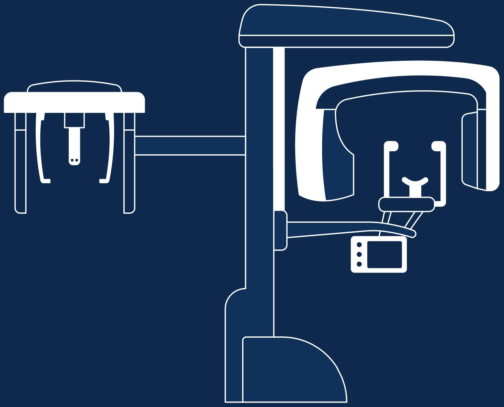
Готовы ответить на них ежедневно с 09:00 до 21:00.
Определим состояние, объясним все этапы и составим план лечения